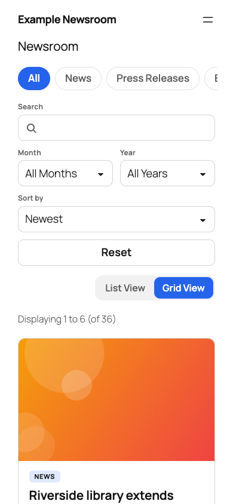

Press Releases
Statement on the proposed harbor development
Our position on the waterfront plan and how to take part.
Real capture of the demo site. Tabs clip at the right edge, filters take a full screen section.

Search first, one row for Filters and Sort, active filters visible, count and layout switch on one line.
Our position on the waterfront plan and how to take part.
Read the year in numbers and stories.
Category, month and year live in one disclosure panel (a button with aria-expanded; no drawer, no focus trap). With JavaScript off everything is simply visible.